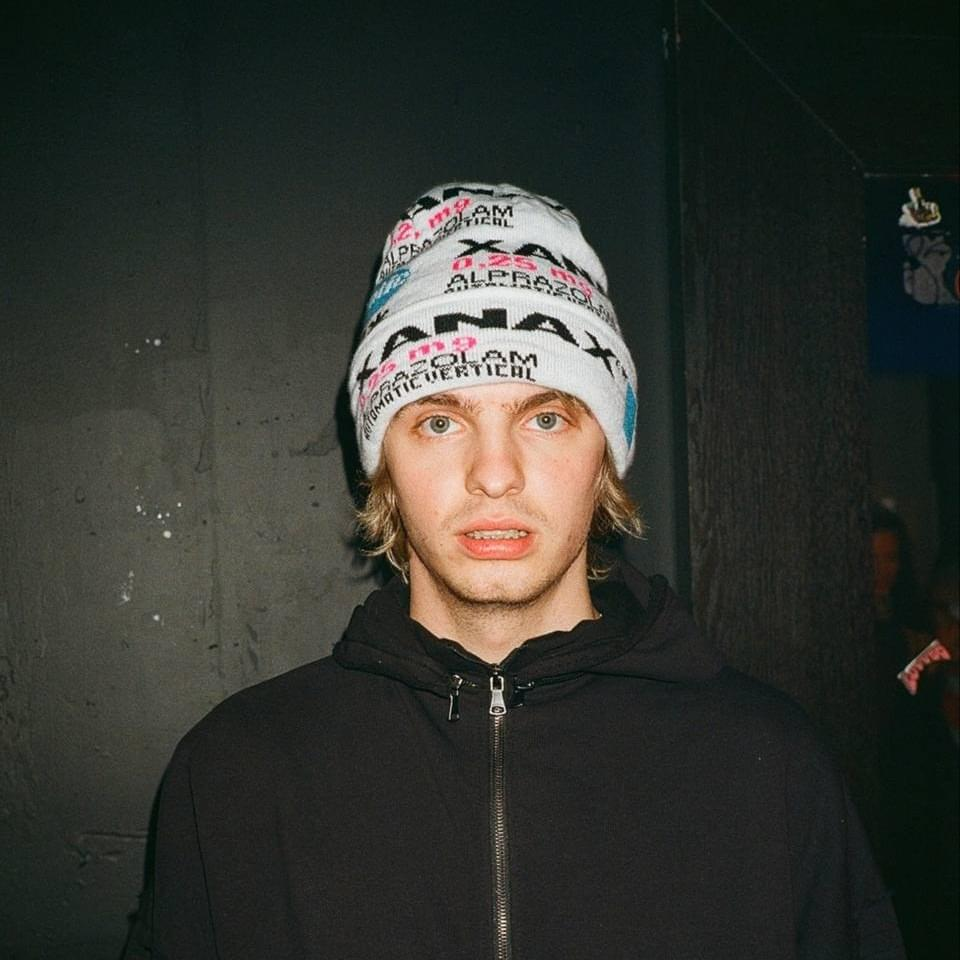
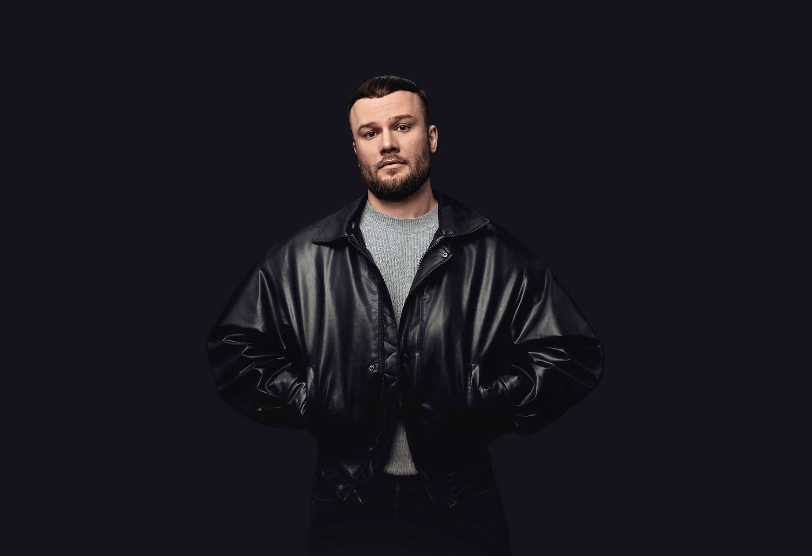
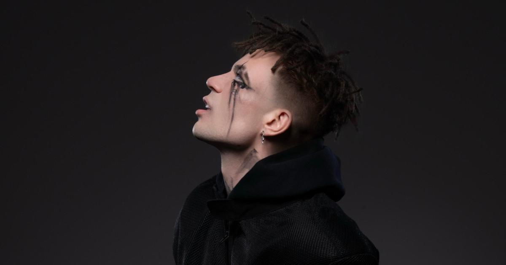

МУЗЫКА В 2026
О НАС
Этот сайт сделан с целью посвятить вас в музыкальную индустрию этого времени. Вы узнаете популярных рэперов, увидите, что сейчас прокручивается на колонках 2026 года, и сможете поддержать разговор о современной музыке, не чувствуя себя отставшим от жизни. Никакой снобской аналитики — только живые треки, реальные имена и честные чарты. Слушайте, вникайте, формируйте свой вкус.
МУЗЫКАНТЫ
Современная музыкальная сцена пестра и многогранна. Каждый день появляются новые жанры, миксы и эксперименты. Кто-то берёт энергией, кто-то — текстами, а кто-то просто создаёт настроение, в котором хочется жить. В этом бесконечном потоке есть те, чьи треки мы включаем на повторе, не задумываясь. Их голоса стали саундтреком к нашим дорогам, вечеринкам и одиночеству. Вот как звучат главные герои сегодняшних чартов:
OG-Buda
Жанры:
хип-хоп, трэп, реп
Треки:
«Добро Пожаловать»
«Старшие» (Elders)
«NaNaNa»
MAYOT

Жанры:
хип-хоп, трэп, андерграунд
Треки:
«Ну-ка снимай»
«Йупи Йо»
«Грусть 2»
SLAVA MARLOW
Жанры:
хип-хоп, поп-музыка, джаз
Треки:
«Агентство насилия»
«Она тебя любит»
«По глазам»
Макс Корж

Жанры:
дабстеп, хип-хоп, рэп-рок
Треки:
«Жить в кайф»
«Пьяный дождь»
«Где твоя любовь?»
Элджей

Жанры:
хип-хоп, поп-музыка, реп
Треки:
«Розовое вино»
«Рваные джинсы»
«Дисконнект»
ТОП-ЧАРТЫ
Tо, что реально слушают. То, что взрывает колонки. То, без чего не обходится ни одна вечеринка. Собрали главные треки прямо сейчас — листай, слушай, добавляй в плейлист.
КОНТАКТЫ
Мы не кусаемся. Честно. Задавай любые вопросы — от «как добавить трек» до «какого цвета наша студия».